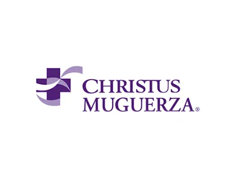
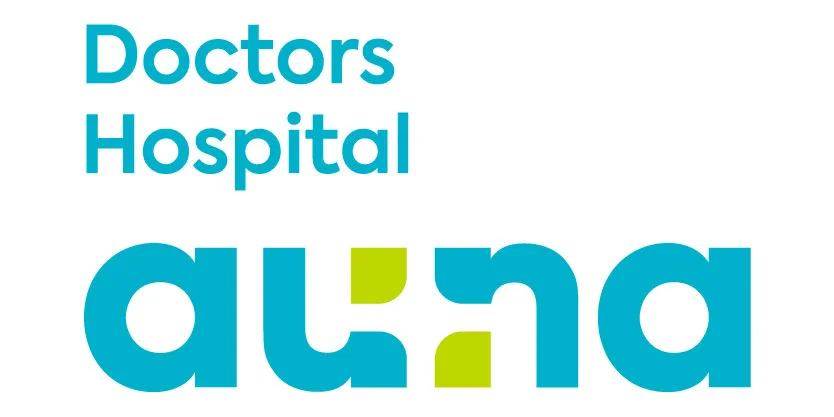

¿Por qué la Dra. Mariel?
Lo que nos hace
Lo que nos hace
distintos en Monterrey.
Ningún otro especialista de pie y tobillo en la ciudad ofrece este conjunto de ventajas simultáneamente.
10+
Años de formación
4 años especialidad · 6 años ejercicio clínico
1
Subespecialidad
Exclusiva en pie y tobillo — no un ortopedista general
24/7
Disponibilidad
Asistente WhatsApp 24/7 · Urgencias en línea directa
$1,200
Consulta inicial
Seguimiento $1,000 MXN · Sin cargos ocultos
Alta especialidad certificada
Formación en ISSSTELEÓN — institución de referencia nacional. La subespecialidad que marca la diferencia en el diagnóstico y la técnica.
ISSSTELEÓN · UANLCirugía mínimamente invasiva
Artroscopía y técnicas percutáneas. Menos trauma, cicatriz mínima, recuperación más rápida que cirugía abierta convencional.
Artroscopía · MISTrato sin fábricas de pacientes
Consultas con tiempo real. Explicaciones claras, toma de decisiones compartida y seguimiento postoperatorio personalizado.
Consultorio privadoUrgencias con respuesta directa
Fractura, luxación o dolor severo que no puede esperar: línea directa de urgencias para pacientes del consultorio.
81 1488 2658
Seguros aceptados
Reembolso · Consulta privada
Hospitales afiliados




